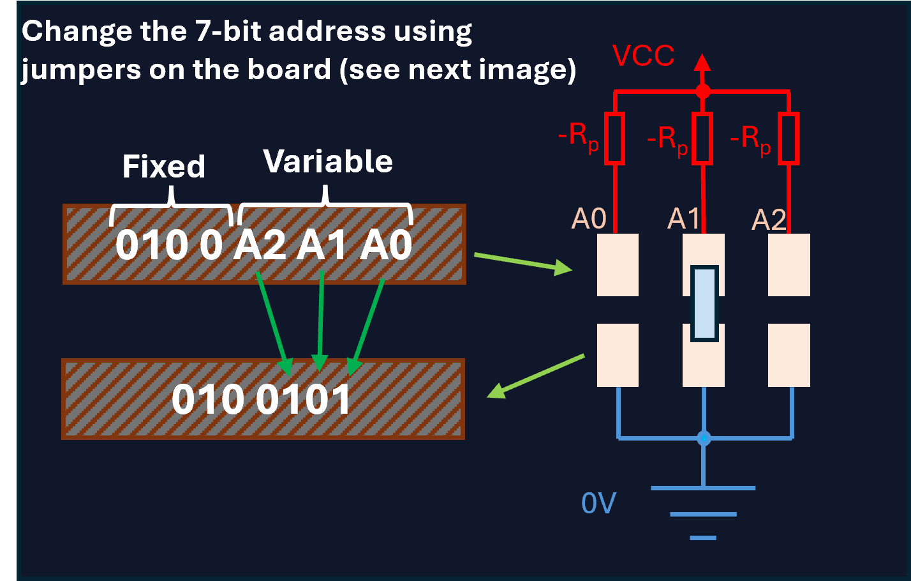
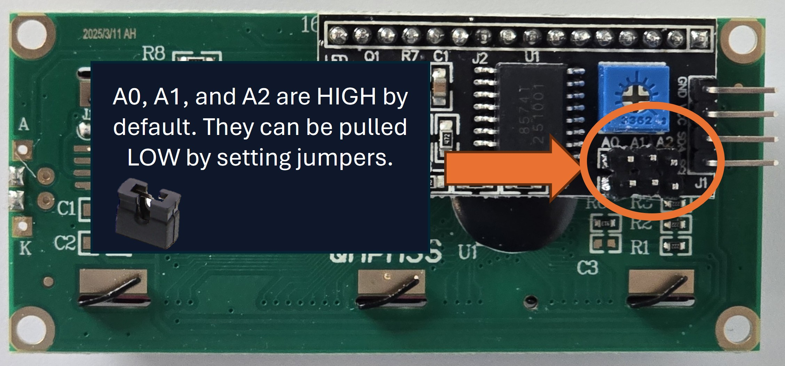
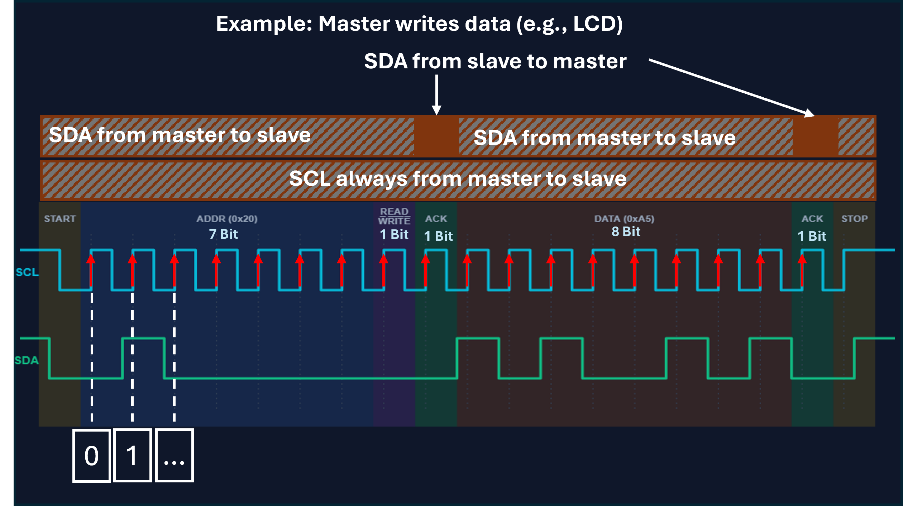

What exactly is I²C?
I²C (Inter-Integrated Circuit) is a serial data bus, developed by Philips in the 1980s and managed by NXP today. It is used for communication between different components.
As an electronics technician, this bus is an important tool. Why? Because instead of 8 or more wires for a display, you only need exactly two signal lines:
-
SDA (Serial Data): The data line. Information such as addresses and data are sent here.
-
SCL (Serial Clock): The clock line. It indicates when the levels are read. A rising edge means reading the SDA level.
Selling point: With our I²C displays, you save valuable GPIO pins on your microcontroller for more sensors or actuators!
HD44780 Parallel
Up to 10 pins occupied!
Visionary I²C
Only 2 pins occupied!
The Hardware Level: How it works electrically
Open-Drain and Pull-up Resistors
As future system electronics technicians, you need to know what happens electrically on the bus. I²C uses an Open-Drain (for FETs) or Open-Collector (for bipolar transistors) architecture.
This means: A bus participant can only pull the line to ground (LOW) and not actively pull it to VCC (HIGH).
Important for practice!
For the bus to be at HIGH level in the idle state, pull-up resistors (Rp) to VCC are absolutely necessary (usually 4.7 kΩ to 10 kΩ, depending on the bus capacity and speed).
IMPORTANT: Our Visionary Displays already have the pull-up resistors soldered on the back!

View of the back of the LCD:

Address Setting in Practice
What happens if you want to connect two identical displays or sensors to the same I²C bus? Since every device listens to a specific address from the factory, there would be a conflict (data collision).
The solution: Almost all I²C modules offer the possibility to adjust the base address on the hardware side. This is usually done via solder bridges (solder jumpers) or plug jumpers labeled A0, A1, and A2.
Example based on the picture
The 7-bit address consists of a fixed part (0100) and the adjustable pins (A2 A1 A0). The logic of the pins is very simple due to internal pull-up resistors:
- No jumper set = HIGH (1)
- Jumper set (bridged) = LOW (0)
Conversion to Hexadecimal
Tip: To easily convert the 7 bits into hexadecimal, just imagine a leading zero on the far left. This creates two simple 4-bit blocks.
The Protocol: Communication
I²C works on the Master/Slave principle. Only the master (your microcontroller) generates the clock (SCL) and starts the communication.
Edges as triggers for reading
How do the ICs on the bus know when a bit is valid? The I²C bus uses edges as triggers: The data line (SDA) is always read exactly when the clock line (SCL) changes to HIGH (rising edge). After that, SDA must not change while SCL remains HIGH. SDA may only change again once SCL drops to LOW.
Important for analysing:
This also means that the state of SDA may only change while SCL is LOW. If SDA changes while SCL is HIGH, this is not interpreted as a data bit, but as a START or STOP condition!

START
The master pulls SDA LOW while SCL is still HIGH. This wakes up all slaves on the bus: "Attention, a message is coming!"
ADDR
The master sends a 7-bit address. Each Visionary Display has its own address (default is 0x27). Only the called slave continues to listen.
READ / WRITE
The 8th bit determines the communication direction: It specifies whether the master writes data to the slave (0) or reads from it (1).
- WRITE (0): Master sends to slave (e.g., text for LCD).
- READ (1): Master receives from slave (e.g., read sensor value).
ACK
The slave replies with an acknowledge bit (ACK = LOW) if it has understood the address or data and is ready to communicate.
DATA
The actual payload data (e.g., a command or text for the display) is sent byte by byte. Each byte is followed by another ACK.
Stop
At the end, the master pulls SDA back to HIGH while SCL is HIGH. This officially releases the bus again.
Live Oscilloscope Simulator
Send a character to our display and observe the bus.
Protocol Decoder:
Do you have questions?
Knowledge Chat BotAlready done? Would you like to deepen your knowledge further?
Click here for bonus knowledge